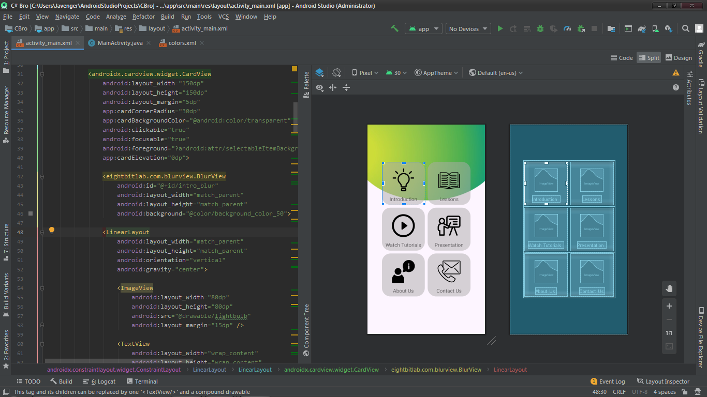
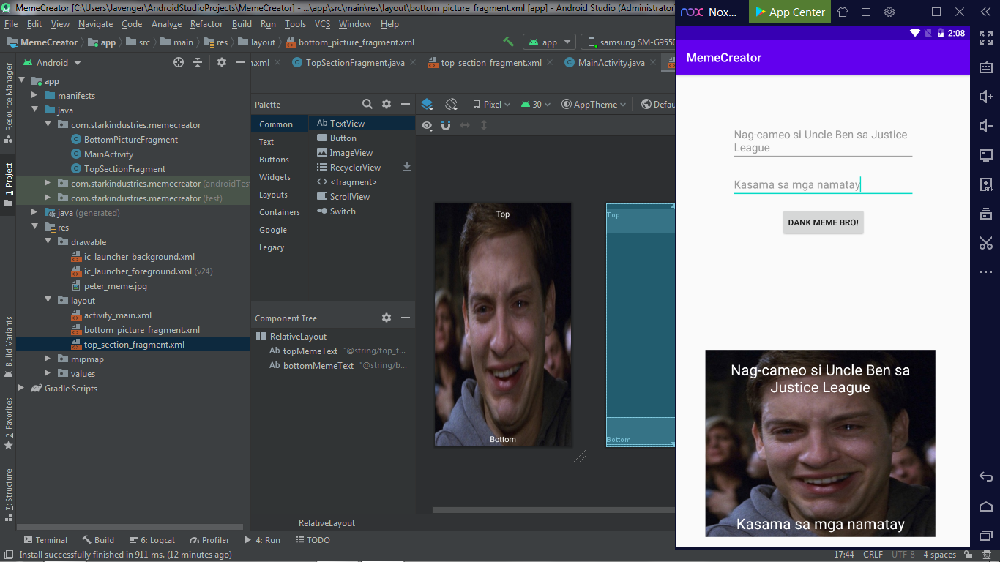
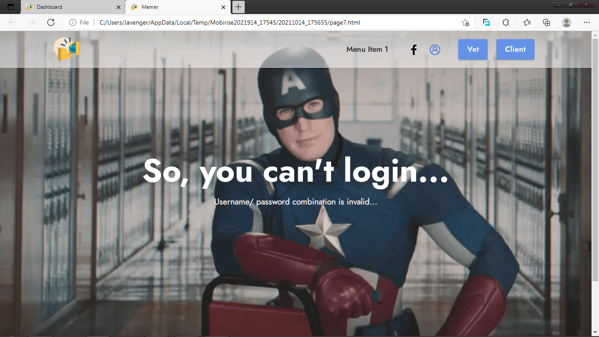
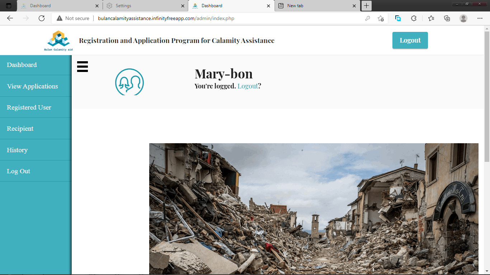

Projects
Notable projects over the years
.jpg)


I'm an aspiring Software Engineer who has contributed to a live company project and assisted in developing several student projects.
I was a Computer and Network Technician with 6+ years of hands-on experience in computer system installation, network troubleshooting, server configuration (including Active Directory, DNS, GPO), and remote deployment solutions. Passionate about emerging technologies and delivering reliable IT solutions.
Decided to pursue a career in software development to leverage my technical skills and creativity.
Hire me
During college, was involved heavily in development of systems as part our projects and thesis. In fact, I contributed most of the programming task of the project, while the rest of the group focused on the documentation and presentation.
During first year, I worked on a library management system using VB6 (Visual Basic 6). While I worked on payroll system during my second year using Java.
Amusingly enough, I wasn't fortunate enough to continue my studies during my second year due financial constraints. So the group which I was a part of paid me to continue working on the project instead. I was able to complete the project and they were able to graduate, while I had to drop out.
.jpg)
I continued to work on projects as a freelancer after dropping out of college. It was a great way for me to earn extra income while keeping my skills sharp. I was able to work on a variety of projects, including web development, mobile app development, and software development.
Most of these projects were sold to students for their thesis, and mostly a proof of concept for their project. I was able to complete these projects within the given time frame and budget, and the clients were satisfied with the results.

This is a simple system to manage the accounting journal entries of a company. It was developed using Java and JavaDB (Apache Derby) as database. I used Netbeans as my IDE. The system allows users to create, read, update, and delete journal entries. It also have search feature to easily find specific entries based on various criteria such as date, account, and amount.
A system designed as aid for the police blotter record management. This featured a user-friendly interface for efficient registering of records. It aims to speed up the process of retrieving details and managing blotter records. Also developed using Java on Netbeans IDE, and JavaDB (Apache Derby) as database.

An andriod app designed to help children learn in an interactive and fun way. It contains various educational games and activities such as which teaches colors, and animal sounds with reward systems using collectible stickers. It also features nursery rhymes and lullabies in form of music and videos. The app was developed using Android Studio and Java with SQLite as the database.
It was particularly fun because the client got the full concept and design of the app, and she helped me with the layout and overall concept of the app. She also designed some of the icons herself and provides all the contents of the app. We're basically working as a team, and I just do the programming part. Which looking back now, the app was a great concept, and it was a great collaboration.
This is a simple app based on a C# book as the main source. It contains various exercises and quizzes to help users learn C#. It was designed to be a companion app for the book, providing users with a way to practice and reinforce their learning. The app is also developed using Android Studio and Java with SQLite as the database.

.png)
This is a simple website designed to get veterinary clinics more accessible to pet owners. It allows users to book appointments, view their pet's medical history, and communicate with their veterinarian. The website was developed using HTML, CSS, and JavaScript for the frontend, and PHP and MySQL for the backend. I used VS Code as my main IDE.
This is a website designed to ease the process of registering to local government for calamity assistance. It allows users to create an account, fill out a form with their information and the details of the calamity they are facing, and submit their application for assistance. It also features SMS and email notifications to keep users informed about their application status. The website was developed using HTML, CSS, and JavaScript for the frontend, and PHP and MySQL for the backend. Also used VS Code as my main IDE.


Someone reached out to me if I can write a simple point-of-sales accounting system for their small business, but changed their mind afterwards. But I decided to write the system anyway as a personal project, just for a dare and to challenge myself. It turned out to be the most complex project I've ever written, and it was a great learning experience for me.
The system was developed using Java in Netbeans and JavaDB (Apache Derby) as database. It is complete with inventory management system, with employee, customer, and supplier management features, sales reports, and I even implemented a graphical dashboard for the sales statistics.
I haven't worked with POS systems before, and I basically structured the system on imagination and some research on how these systems work. The system is particularly complex, and it would be a great presentation for a thesis project, but I realized that it doesn't really fit for a real-life POS operation, and not designed with efficiency with cashiers working with bulk items in mind. So with observation with real-life supermarkets and stores operations, I made some adjustments to systems afterwards.
I built a mall integration interface while working as technical support engineer for a POS supplier company, when I was trying to convince my boss to absorb me as an associate programmer. I was tasked to update the existing mall interface of the company, as a response to my request while they were to discuss my proposal with the other officers.
The existing interface was written by former programmer, which was written in Visual Basic 6 (VB6) and looked old and outdated for the POS and the overall current technology standards, and also having occasional errors that disrupting daily mall sending until the tech fixes it. If the tech overlooked the issue, and not fixed immediately, the mall tenant will be penalized by the mall management if failed to send POS sales for several days.
The new interface was developed using C# and .NET Framework in Visual Studio, and it was designed to be more user-friendly and featured more modern and visually appealing design. The new interface eliminates the old interface's issues, and also features new functions to handle common issues such as double sessions and not sequential sending of sales. The new interface can handle backwards generation of sales for a specific date, and have an auto-generate function which eliminates most of the concerns received by the tech support team regarding the mall sending.
Like any other developer, I have my own personality and preferences that I bring to my work. Especially, being self-taught and college dropout, I have a unique perspective on software development that is shaped by my experiences and challenges. I am a problem solver at heart, and I enjoy finding creative solutions to complex problems. I am also a lifelong learner, and I am always looking for new technologies and techniques to improve my skills.
When I say I enjoy finding creative solutions to complex problems, I'm really trying to find fun ways to solve problems, even with a really difficult and extremely challenging ones. I often include humor and fun elements in my projects, as I believe that it can make the development process easier and more enjoyable. I also believe that it can help to create a more positive and productive work environment, which can lead to better results.
Being self-taught, I was tilted towards hard-coding and vanilla approach to my projects, and I've been more comfortable with this approach over the years. I was comfortable writing solutions from scratch and I even remember implementing solutions that was never explored by others when met with an unresolved thread in the programming communities from popular forums and discussions.
I do have some issues I struggle with, but I was always able to showcase my creativity and problem-solving skills by finding unique solutions to these issues.




I have a naturally playful and humorous personality, and I often incorporate these traits into my work. I believe that humor can be a powerful tool for building relationships and creating a positive work environment. I also believe that it can help to reduce stress and increase productivity, which can lead to better results.
For example, when I was learning PHP, I created a concept website of palusot.com, which is as you can guess, a website that compiles various palusot (excuses) for different situations. It features user postings of difficult situations and other user can give their own palusot (excuses) to handle the situation. It was also completely functional with user login and registration system. And it was surprisingly complex for a "joke" project, as it was developed using PHP and MySQL, but because it was fun and hilariously entertaining, I was able to finish it.
Another example when I'm learning Java, I created a simple FLAMES game, which is a popular game that predicts the relationship between two people based on their names. It was a similarly complicated project as the counting and backwards counting algorithm of the matching letters was a bit tricky to implement, and later when I updated it with a graphical sketches and crossing out of letters, but I was able to finish it because it was funny.
For some reason, I prefer hard-coding and vanilla coding over using libraries and frameworks. I think this is due to being self-taught and learning to code through trial and error, which often involves writing code from scratch and figuring out how to solve problems without relying on pre-existing solutions.
One example of this is when I included a graph on finance statistics window of the POS accounting system. There are many popular libraries and frameworks in Java that can be used to create graphs. But rather than learning these additional tools, I instead decided to learn Paint and Graphics2D in Java, and I was able to create a simple graphing system that can display line graphs. It was the same techniques that I used to create the graphical sketches and crossing out of letters in the FLAMES game.
Now, I am not anti-tool or against using libraries and frameworks, especially if it improves efficiency. But I think this is mainly due to being unexposed to these tools as being self-taught, and I just got used to writing code from scratch. I am also open to learning and using new tools and technologies, but I think these preferences strengthen my problem-solving skills and creativity, as I am forced to think outside the box and come up with unique solutions to problems. That is why instead of this being a weakness, I consider this as a strength and a unique aspect of my development approach, as it allows me to create solutions that are not limited by the constraints of pre-existing tools and libraries.

.jpg)
I think one of my weaknesses as a developer is front-end development. I was always not good at designing user interfaces and layouts. I do think I'm a decent back-end developer, and I can create functional and efficient code, even with extremely complicated logic, but I often struggle with making it look good and user-friendly.
Now, I used to overcome this with my projects by using drag-and-drop GUI builders, and by observing and taking inspirations from other works. For example, when doing Java projects, I use Netbeans' built-in GUI builder, Visual Studio have a built-in GUI designer when I'm working with C# with .Net framework, and Android Studio has a layout editor, and so on. Using the same concept on the back-end, I often perform trial and error with the design, until I was satisfied with the result and it looked good enough for me. And I think I've improved a lot with designing my own layout over the years, especially when there's already a concept for a design.
The problem is that there's no similarly good "drag-and-drop", "GUI builder" existing for web development.
I remember working on the palusot.com project, and making it look almost decent by frankensteining the design from various websites and templates, and by using a lot of trial and error with the HTML and CSS code. It was functional, but I was not confident with the design, and I was not satisfied with the result. But due to it being a "joke" project, it was good enough.
When I was working on web development projects for other clients, I used an app called Mobirise, which is a drag-and-drop website builder, to create the layout and design of the website, and then integrate it with PHP code. It was the best solution I could find, but it was awfully incompatible with my use case. I remember it was a nightmare to integrate the design with the PHP code, and it was a struggle to make it work. I have to design the website with Mobirise, then export the code, and then manually copy and paste the code on my main PHP files and manually selecting certain CSS stylesheet on the HTML head section to make it work. Doing it the other way around by opening the main folder with the PHP files and editing the existing HTML files on Mobirise will destroy the existing code, so you need to export it first instead then copy-paste it. It was a very tedious and time-consuming process, and it was not efficient at all.


That being said, even with these struggles, I've shown that I can still manage to find creative ways to execute and finish my projects the way I want to. Even with these limitations, I was still able to deliver functional and profesional looking websites to my clients, and I was able to create a simple and decent design for my personal projects. It was easy to say that you love challenges and enjoy finding creative solutions to complex problems, but I think what my weaknesses have shown me that I do possess these characteristics, and I actually do enjoy very difficult and challenging tasks. These weaknesses even helped me prove and showcase my strengths.